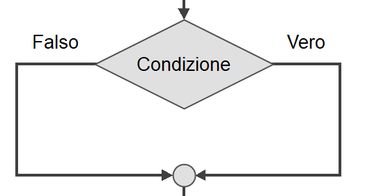
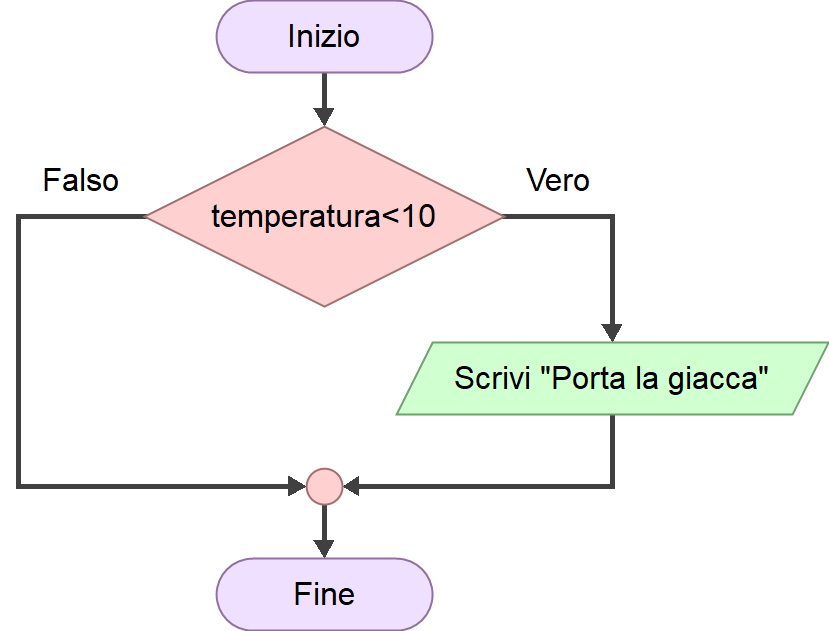

Richiamo · 10 minuti
Sequenza, variabili ed espressioni.
Secondo anno — Lezione 2.05 · Durata prevista: 2 ore
Usare una condizione semplice per scegliere quali istruzioni eseguire.
Sequenza, variabili ed espressioni.
Condizione, vero o falso e blocco decisionale.
Selezione semplice e doppia in Flowgorithm.
Esercizio autonomo, colloquio e autoverifica.
Finora i nostri algoritmi hanno eseguito tutte le istruzioni, una dopo l'altra.
INIZIO
LEGGI prezzo
LEGGI quantita
totale ← prezzo * quantita
SCRIVI totale
FINEQuesta è una sequenza: ogni blocco viene eseguito una volta, nell'ordine indicato dalle frecce.
Leggiamo una temperatura. Vogliamo mostrare il messaggio Porta la giacca
soltanto quando la temperatura è minore di 10 gradi.
Una sequenza mostrerebbe sempre il messaggio. Invece l'azione dipende dal dato inserito:
Una struttura che permette all'algoritmo di scegliere il percorso da seguire in base al risultato di una condizione.
La frase temperatura < 10 è una condizione. Il suo risultato può essere soltanto:
Il dato rispetta la condizione. Con temperatura = 6, la frase 6 < 10 è vera.
Il dato non rispetta la condizione. Con temperatura = 18, la frase 18 < 10 è falsa.
| Significato | Operatore | Esempio |
|---|---|---|
| Minore di | < | temperatura < 10 |
| Maggiore di | > | numero > 0 |
| Uguale a | = | numero = 0 |
| Minore o uguale a | <= | eta <= 14 |
| Maggiore o uguale a | >= | punteggio >= 6 |
Nel diagramma di flusso la decisione è rappresentata da un rombo. Al suo interno scriviamo la condizione.

La condizione viene valutata.
Il flusso segue il ramo indicato con Vero.
Il flusso segue il ramo indicato con Falso.
L'esecuzione continua con i blocchi successivi.
SE temperatura < 10 ALLORA
SCRIVI "Porta la giacca"
FINE SE
temperatura < 10 è vera viene eseguito l'output Porta la giacca.
Questa è una selezione semplice: contiene un'azione soltanto sul ramo vero. Se la condizione è falsa, quell'azione viene saltata.
Problema: leggere un numero e mostrare Il numero è positivo
soltanto quando il numero è maggiore di zero.
Apri Flowgorithm e prepara un nuovo diagramma.
Crea numero di tipo Real.
Inserisci un blocco Input per numero.
Inserisci un blocco If e scrivi la condizione numero > 0.
Inserisci l'output "Il numero è positivo".
Questa selezione esegue un'azione soltanto quando la condizione è vera.
Prima di avviare il diagramma, completa la tabella seguente.
| Numero | La condizione è… | Output atteso |
|---|---|---|
| 5 | Vera | Il numero è positivo |
| -2 | Falsa | Nessun messaggio |
| 0 | Falsa | Nessun messaggio |
Inizio → dichiarazione di numero → input di numero → decisione numero > 0 → sul ramo vero, output del messaggio → ricongiungimento → Fine.
Seguiamo lo stesso algoritmo con due dati diversi.
| Passaggio | Prova con 5 | Prova con -2 |
|---|---|---|
| Input | numero ← 5 | numero ← -2 |
| Condizione | 5 > 0: vero | -2 > 0: falso |
| Percorso | Ramo vero | Ramo falso |
| Output | Il numero è positivo | Nessun messaggio |
Lo stesso diagramma può quindi seguire percorsi diversi, perché il risultato della condizione dipende dall'input.
A volte vogliamo eseguire un'azione quando la condizione è vera e un'altra quando è falsa.
SE eta >= 18 ALLORA
SCRIVI "Maggiorenne"
ALTRIMENTI
SCRIVI "Minorenne"
FINE SEQuesta è una selezione doppia. Viene eseguito un solo ramo: mai entrambi.
Completa la selezione doppia che legge un numero e mostra uno dei due messaggi.
INIZIO
DICHIARA numero COME Real
LEGGI numero
SE ____________________ ALLORA
SCRIVI "Il numero è zero"
ALTRIMENTI
SCRIVI "Il numero è diverso da zero"
FINE SE
FINE0 e con 4.La condizione è numero = 0. Con 0 viene mostrato Il numero è zero
; con 4 viene mostrato Il numero è diverso da zero
.
Problema: un museo offre l'ingresso gratuito fino a 12 anni compresi. Leggi l'età e mostra Ingresso gratuito
oppure Biglietto ordinario
.
Scrivili sul quaderno.
Indica nome e tipo.
Usa un solo confronto.
Prevedi un'azione sul ramo vero e una sul ramo falso.
Usa le età 10, 12 e 15.
Costruisci il diagramma in Flowgorithm e confronta gli output.
Descrivi a voce il percorso seguito in ogni prova.
Input: eta, di tipo Integer. Condizione: eta <= 12.
SE eta <= 12 ALLORA
SCRIVI "Ingresso gratuito"
ALTRIMENTI
SCRIVI "Biglietto ordinario"
FINE SECon 10 e 12 l'output è Ingresso gratuito
. Con 15 è Biglietto ordinario
.
Leggi la condizione e chiediti quale azione corrisponde al risultato vero.
Una sola esecuzione non controlla entrambi i possibili percorsi.
Con <= e >= prova anche il valore uguale al limite.
Per ora costruisci ogni condizione con un solo confronto.
Perché alcune istruzioni devono essere eseguite soltanto quando si verifica una determinata condizione.
Produce un valore vero oppure falso.
Il rombo, dal quale partono il ramo vero e il ramo falso.
La selezione semplice contiene un'azione soltanto su un ramo; quella doppia prevede un'azione alternativa sull'altro ramo.
Si sceglie almeno un dato che renda vera la condizione e uno che la renda falsa; quando serve, si prova anche il valore limite.
Riepilogo finale
Le idee essenziali da ricordare.
Disegna un rombo, scrivi numero > 0 e spiega i due percorsi senza leggere.